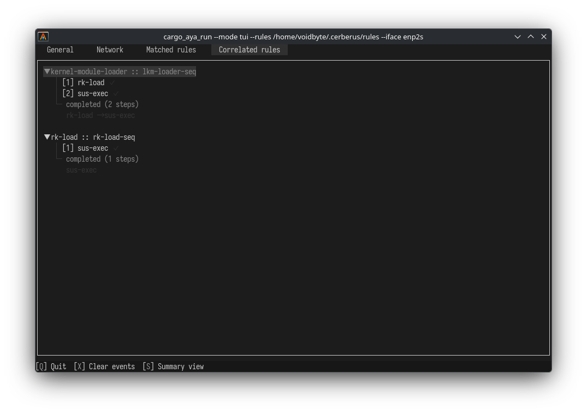

eBPF-Native Telemetry
Uses LSM, Kprobes, Tracepoints, and XDP hooks for comprehensive kernel coverage without loading kernel modules or rebooting.
Cerberus is a high-performance Linux security monitor powered by eBPF. Observe kernel behavior in real time, correlate events into attack sequences, and respond automatically with LSM-enforced actions.
$ sudo ./cerberus --mode agent --rules ./rules --iface eth0
[20:52:18] INFO Agent sink started, waiting for events...
[20:52:18] ERROR [RULE: kernel-module-loader] severity=critical (PID: 54579, UID: 0)
[20:52:18] ERROR [RULE: rk-load] severity=critical (PID: 54585, UID: 0)
[20:52:18] WARN [CORRELATION] kernel-module-loader::lkm-loader-seq step 1/? matched rk-load
[20:52:18] WARN [RESPONSE] rule=kernel-module-loader action=BlockIp { ip: 1.1.1.1 }
[20:52:18] WARN [CORRELATION] kernel-module-loader::lkm-loader-seq completed (1 steps): rk-loadFrom kernel telemetry to automated response, every component is built for speed, safety, and observability.
Uses LSM, Kprobes, Tracepoints, and XDP hooks for comprehensive kernel coverage without loading kernel modules or rebooting.
Compile and evaluate high-performance detection rules with severity classification, regex matching, set-based filtering, and dynamic event field bindings.
Define response chains triggered by rule matches or completed attack sequences. Block IPs at XDP, kill processes using bound event fields like $process.pid, and emit signals automatically.
Resolves Docker and Kubernetes metadata via CRI. Every event is tagged with container ID, pod name, and namespace context.
Detect multi-stage attack chains by correlating discrete events into ordered sequences with configurable time windows.
Update detection rules on the fly with filesystem watchers. No daemon restarts, no event loss, no gaps in coverage.
Cerberus instruments the entire attack surface — from process execution to network packets.
Monitor bprm_check_security to detect unauthorized binary execution and script-based attacks.
Track TCP state transitions via inet_sock_set_state to identify reverse shells and C2 beacons.
Observe unlink, mkdir, rmdir, rename, link, and symlink operations in real time for tamper detection.
Intercept do_init_module to catch rootkit loading and unauthorized kernel extensions.
Detect ptrace abuse and credential commits before the attacker gains elevated access.
Alert on suspicious BPF program and map loads. Block malicious traffic at the earliest network layer with XDP.
Response actions are no longer limited to static values. Bind action parameters directly to event fields using the $ prefix and target the exact process, IP, or file that triggered the rule.
Dynamic references: Use $process.pid, $process.uid, $network.daddr, and any other event field in action parameters.
Context-aware kills: Terminate the specific PID that executed a suspicious command, not a hardcoded guess.
Precision blocking: Drop traffic from the exact source IP extracted from the triggering network event.
Type-safe resolution: Bindings are validated at rule load time. Missing or mismatched fields fail fast with a clear error.
[rule]
id = "suspicious-exec"
description = "Suspicious process execution"
severity = "high"
[[rule.conditions]]
field = "process.filepath"
op = "regex"
value = "(curl|wget)"
[rule.response_chain]
trigger = "rule_match"
[[rule.response_chain.actions]]
type = "kill_process"
params = { pid = "$process.pid" }Don't just detect — respond. Declare actions that execute automatically when a rule fires or a correlated sequence completes.
Trigger-based: Attach chains to rule_match or sequence_finished events.
Field bindings: Inject live event data into action parameters with $field.path syntax for precise, context-aware responses.
XDP blocking: Drop traffic at the kernel's earliest network layer before it hits the stack.
Process termination: Kill malicious processes instantly via LSM-enforced hooks, targeting the exact PID from the event.
Composable actions: Chain multiple blocks, kills, and signals in a single response.
[rule]
id = "kernel-module-loader"
description = "Detect kernel module loading"
severity = "critical"
[[rule.conditions]]
field = "module.name"
op = "=="
value = "lkm"
[rule.sequence]
id = "lkm-loader-seq"
kind = "rule"
[[rule.sequence.steps]]
rule_id = "rk-load"
within = "10s"
[rule.response_chain]
trigger = "sequence_finished"
[[rule.response_chain.actions]]
type = "block_ip"
params = { ip = "1.1.1.1" }
[[rule.response_chain.actions]]
type = "block_ip"
params = { ip = "8.8.8.8" }Run interactively with a rich terminal dashboard for incident response, or deploy silently as a headless agent with structured logging. Both modes support writing events to disk in the background via --log and rule hot-reloading.
TUI Mode: Ratatui-powered terminal dashboard with tabs for general events, network traffic, matched rules, and correlated attack chains. Hook control — enable or disable individual eBPF probes on demand without restarting the daemon — is available here.
Agent Mode: Headless operation with human-readable console output.

Clone the repository, compile with Cargo, and start monitoring your Linux infrastructure in minutes. Cerberus is free, open source, and community-driven.
git clone https://github.com/CTFcrozone/Cerberus.git && cd Cerberus && cargo build --release